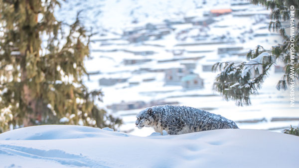
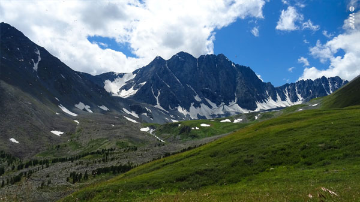

서식지 파괴, 잔인한 밀렵, 그리고 계속해서 증가하는 지역사회와의 갈등은 전 세계 눈표범을 멸종 위기로 내몰고 있습니다.
모든 위협의 근본적 원인은 전지구적 기후변화이며 고산지대에 서식하는 눈표범은 매일 줄어드는 서식지 안에 고립되거나 죽임을 당할 수 밖에 없는 처지입니다.
눈표범은 제 3의 극지(The Third Pole)이라 불리는 히말라야 고산지대에서 가장 강한 육식동물로 해당 환경 전반을 평가하는 지표종입니다.
그 존재만으로도 고산지역으로부터 흐르는 강물에 의존하여 생활하는 사람들과, 기타 동식물이 살아갈 수 있는 자연 환경을 유지하는 역할을 하죠.
하지만 전체 서식지의 2%에 불과한 지역만이 카메라 트랩과 같은 각종 분석 기술을 통해 조사되고 있을 뿐입니다.
눈표범과 이 광대한 산악 지대를 지키기 위해 우리에게는 공동 연구 및 지역 사회 기반 보전 활동을 위한 투자가 절실합니다.
눈표범은 어디에서 살까요?
눈표범은 왜 멸종위기에 처했을까요?
불법 밀렵
아름다운 무늬의 눈표범은 오랜 세월 동안 잔인하게 죽임을 당해왔습니다. 가죽은 처참히 벗겨지고 뼈와 신체 장기는 아시아 지역에서 전통 약재를 만드는 데 쓰이는데, 눈표범의 밀렵과 밀거래는 계속해서 증가하고 있습니다.지역사회와의 갈등
서식지 주변 지역 목축업자들은 가축을 해친 것에 대한 보복으로 눈표범을 죽이는 일을 자행하고 있습니다. 서식지가 지역사회와 겹치면서 자연 상태의 먹이가 줄어들자 눈표범은 가축을 먹이로 인식하게 되고, 이로 인한 보복적 살생의 위협이 더 커지는 악순환이 반복되고 있습니다. 서식지 감소
눈표범 개체가 번성하기 위해서는 방대한 면적의 서식지가 필요합니다. 하지만 인간과 가축은 눈표범의 서식지를 빠르게 침해하고 있습니다. 새로 건설된 도로와 광산들은 그나마 남아있던 눈표범의 서식지를 파편화시키며 서식지 간 이동조차 불가능한 상황입니다.기후변화
위에 열거한 세 가지 원인들은 모두 기후변화라는 가장 큰 위협과 연관되어 있습니다. 제3의 극지방으로 불릴 정도로 빙하와 눈이 많은 히말라야 지역은 전 세계 평균 온도 상승치보다 4배 이상 빠른 상승폭을 보입니다. 이로 인해 설선(Snow line)이 위로 올라가면서 기존의 수목 분포 한계선이 바뀌고, 목초지에 의존하여 생활하는 가축과 지역민들이 눈표범의 서식지를 잠식하게 되는 것입니다. 눈표범은 더 이상 올라갈 곳이 없습니다.
기후변화로 인한 고산 지역의 설선 파괴는 눈표범의 미래를 극한으로 내몰고 있습니다. 눈표범은 어쩔 수 없이 더 높은 곳으로 올라가야 하지만, 그 곳에는 먹이가 없습니다. 만약 그대로 머문다면 지역사회와 충돌하여 보복적 살생과 밀렵이 계속 증가할 것입니다.